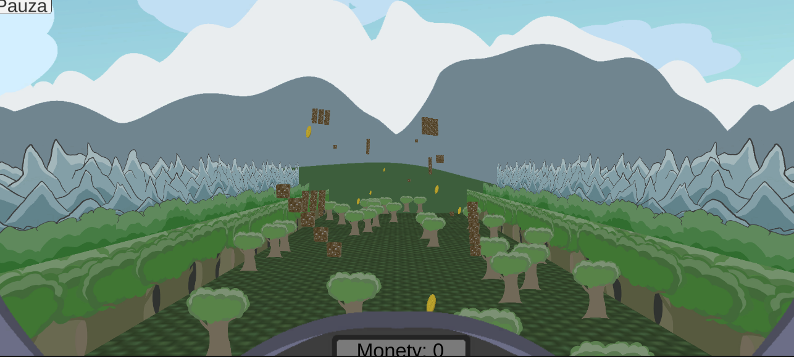

Quanior (and Quapper (and Quack))

{kind=link}
{kind=link}
{kind=link}
Info
So I got the task for my vocational training, to make a game, that will be controlled by a balancing board. To make it, I got ESP32 microcontroller and MPU6050 module to use as a gyroscope sensor. The results came in creation of this.
It features Flight minigame, where you need to dodge dirt obstacles set in multiple patterns and collect coins. You can also draw something with your board. The app also has options for offset and how far you need to bend over, to reach borders.
Fun fact: This project has the record in the most times of changing its framework. Being it Godot -> .Net MAUI -> Unity.
What it has:
- 2 minigames
- Bluetooth connection server (ESP32) and client (Phone)
- Animations
- Drawn textures
Tools used:
- Unity
- Bluetooth Manager Addon
- ESP32
- MPU6050
- Arduino IDE
What I learned from it:
- Using Bluetooth and Bluetooth Low Energy
- Using Unity
- Using modules and microcontrollers
- For the first time in my life I used Sine and Cosine in a practical problem
My biggest mistakes:
- I really need to stop using new tools I don't know how to use and when time is short